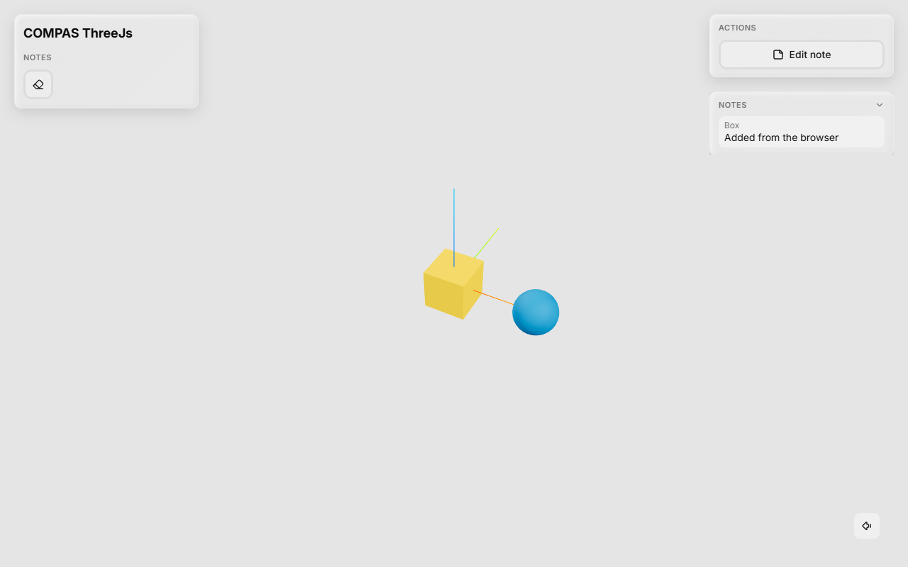

How Plugins Work¤
The viewer itself is a renderer: it shows geometry, lets the user orbit and pick, and talks to Python. Everything else - the toolbar, the gizmo, view presets, drawing tools, panels - comes from plugins. With no plugins, the viewer starts without a toolbar.
from compas_threejs.viewer import App
from compas_threejs_essentials import Essentials
from compas_threejs_views import Views
app = App()
app.plugins = [Essentials(), Views()] # toolbar order; set before start()
app.start()
A plugin is a pip package. It carries two halves that belong together:
- a frontend, Vue components and TypeScript, built once into
static/plugin.js(andplugin.css) and shipped inside the wheel - users never need Node.js; - a Python half, a subclass of
Plugin, that serves the frontend and answers its messages.
The two halves¤
flowchart TB
subgraph wheel["pip package: compas_threejs_myplugin"]
direction LR
py["MyPlugin(Plugin)<br/>name, static, @action handlers"]
static["static/plugin.js<br/>static/plugin.css"]
end
subgraph python["Python process"]
direction LR
app["App<br/>app.plugins = [MyPlugin()]"]
server["FastAPI server<br/>/plugins.json<br/>/plugins/<name>/"]
end
subgraph browser["Browser tab"]
direction LR
page["Viewer page<br/>import map: vue, three, viewer API"]
plugin["definePlugin({ name, groups,<br/>objectActions, panels, setup })"]
end
py --> app
static --> server
app --> server
server -- "HTTP: manifest + module" --> page
page -- "import()" --> plugin
plugin <-- "WebSocket: channel.send / Plugin.send" --> appThe two halves share one thing: the plugin's name. Python's Plugin.name and the
frontend's definePlugin({ name }) must be the same string - it routes every message
between them.
| Frontend (TypeScript) | Python | |
|---|---|---|
| Declare | definePlugin({ name, ... }), default export of plugin.js |
class MyPlugin(Plugin) with name and static |
| Send | channel.send(action, data) |
self.send(action, data) / self.send_all(...) |
| Receive | channel.on(action, handler) |
@action("name") methods, or plugin.on("name") from outside |
| Viewer access | useViewer() / setup(viewer) |
self.app |
| Control the UI | - | hide, show, disable, enable by id; notify |
How a page loads its plugins¤
When a browser tab opens the viewer, it asks Python which plugins to load before it creates the viewer:
sequenceDiagram
participant B as Browser tab
participant S as App (server)
participant P as Plugin (Python)
B->>S: GET plugins.json?workspace=main
opt the workspace is new
S->>P: new_workspace(workspace)
end
S->>P: manifest(), for each of Workspace.plugins
S-->>B: [{ name, module: "plugins/notes/plugin.js?v=…", style }]
B->>S: GET plugins/notes/plugin.css, plugin.js
S-->>B: built files from Plugin.static
Note over B: import() the module<br/>its default export is the ViewerPlugin<br/>run setup(viewer) of each plugin, in order<br/>mount the viewer with their buttons and panels
B->>S: WebSocket connect
S-->>B: scene, then persisted plugin messages<br/>(keyed state, hidden/disabled ids)Some consequences:
- Shared libraries. The page maps
vue,threeand@compas-dev/compas-threejs-tswith an import map, so a plugin is built with those three left external and uses the page's copies. That is what makesuseViewer()and the UI components work inside a plugin. - Cache busting. Each file's URL carries its modification time (
?v=...), so a rebuilt plugin is picked up on reload. - Order.
app.pluginsis the order of the toolbar sections and the order in whichsetupruns. - Late tabs. A message sent with a
keyis kept and replayed to tabs that connect later (and after a reload). Use it for state; leave it out for one-off events.
What a plugin can add¤
export default definePlugin({
name: "notes",
title: "Notes", // heading of its toolbar section
groups: { // toolbar: groups of buttons, by id
edit: { clear: ClearButton },
},
objectActions: { note: NoteAction }, // buttons in the picked object's panel
panels: { // docked panels, by id
list: { component: NotesPanel, title: "Notes", side: "right" },
},
api: {}, // what other plugins get: viewer.plugin("notes")
setup(viewer) { // runs once, before the viewer mounts
return () => {}; // optional cleanup
},
});

| Part | Where it shows | Typical content |
|---|---|---|
groups |
Top left: the plugin's toolbar section (one shaded segment per group) | ToolbarButtons, popovers |
objectActions |
Top right, in Actions, while an object is picked | Buttons that act on state.selectedGuid |
panels |
Right (default) under the object's panels, or left under the toolbar | Lists, trees, forms |
setup |
Nowhere | Subscribing to Python messages, scene overlays, shared state |
api |
Nowhere | Functions other plugins call |
All ids - groups, buttons, object actions and panels - share one namespace per plugin, because Python addresses them the same way:
notes.disable("clear") # one button: greyed out, its shortcut stands down
notes.hide("edit") # a whole group
notes.hide("list") # a panel
notes.show("edit", "list")
Hidden and disabled ids are persisted, so they also hold for tabs opened later. A
plugin that lists its ids in ids turns a misspelled id into a ValueError.
Messages¤
Every message carries the plugin name, an action name and JSON data. The frontend's
channel.send reaches the @action handlers; Python's send reaches the frontend's
channel.on handlers.
sequenceDiagram
actor U as User
participant F as Plugin frontend
participant A as App
participant P as Notes (Python)
U->>F: clicks "Add note"
F->>A: channel.send("write", {guid, text})
A->>P: _write(data, workspace)
Note over P: store the note
P->>A: send_all("notes", [...], key="notes")
A-->>F: every tab: channel.on("notes", ...)
Note over F: the panel re-rendersHandlers are always called as handler(data, workspace). Inside a handler,
self.send(...) answers the tab the message came from; self.send_all(...) talks to
every tab. A useful pattern, which the ready-made plugins follow, is to let Python own
the state: the frontend only asks for changes, Python applies them and sends the
whole state back. Every tab then shows the same thing, a reload shows it again, and a
script can read and change it.
Outside a handler, send goes to the main workspace unless you pass workspace=.
The Python Half, Explained goes through this in detail: what @action
and plugin.on do, in which order handlers run, threads and errors, and where each
send goes.
Workspaces¤
A workspace is one view of the app, shown by the tabs whose URL has
?workspace=<id> (main without one). Plugin objects are shared by all workspaces -
there is one Notes() - and each message tells the handler which workspace it came
from.
flowchart TB
subgraph app["App"]
notes["Notes()"]
draw["Draw()"]
end
main["Tab: main<br/>Workspace.plugins = all with in_main"]
beam["Tab: ?workspace=beam<br/>Workspace.plugins = [notes]"]
notes <--> main
draw <--> main
notes <--> beamWorkspace.pluginspicks the plugins a workspace shows; by default all ofApp.plugins.- A plugin with
in_main = Falseis left out of the main workspace - for an editor that only makes sense in its own tab. - A plugin's frontend can open another workspace in a new tab with
window.open(viewer.workspaceUrl(id)); Python prepares it inPlugin.new_workspace.
Plugins that use each other¤
A plugin's api is what other plugins get from viewer.plugin(name), e.g. a drawing
plugin's tool controller. Ask for it when needed, not in setup, since plugins are
set up in order. Plugins can also share viewer.state.snap: one writes the snap steps,
others follow them.
What the viewer gives a plugin¤
The frontend API is deliberately small. useViewer() (inside a component) and
setup(viewer) give a PluginViewer:
state |
reactive selectedGuid, theme, pickerEnabled, interacting, snap |
selection |
clear(), onChange(listener) |
objects |
hide, showAll, setPickable, commitTransform, getMaterial, setMaterial |
camera |
get, set, setView(preset) |
channel(name) |
send, on - prefer useChannel(name) in components |
notify(message, { kind, key, progress }) |
a short message at the bottom of the view; with progress (0-1) a progress bar, kept until a notice with its key replaces it |
plugin(name), workspace, workspaceUrl(id) |
other plugins, workspaces |
three |
closer to the scene for interactive tools: camera, canvas, object(guid), addOverlay, pointerRay, beginInteraction, pauseNavigation, addPickGuard, ... |
The Frontend Half, Explained goes through it in detail: loading, when
components are mounted, messages, shortcuts, and an interactive tool built on
beginInteraction.
useShortcuts({ key: handler }) binds keys while a component is mounted.
ToolbarButton, Button, Popover, Tooltip, Slider, Select, Checkbox,
NumberField and Kbd make a plugin look like the rest of the viewer.
Ready-made plugins¤
| Package | Plugin | What it adds |
|---|---|---|
compas_threejs_essentials |
Essentials() |
picker, move/rotate/scale gizmo, hide/lock, theme, screenshot |
compas_threejs_views |
Views() |
view presets and saved views, kept in Python |
compas_threejs_draw |
Draw() |
drawing tools: lines, shapes, extrude, snapping |
compas_threejs_layers |
Layers() |
a layers panel |
compas_threejs_io |
IO() |
glTF/GLB export and import |
compas_threejs_pixels |
Pixels() |
a PDF or image plan as an underlay |
compas_threejs_wizard |
Wizard() |
a first-run tour |
To write your own, follow the tutorial.